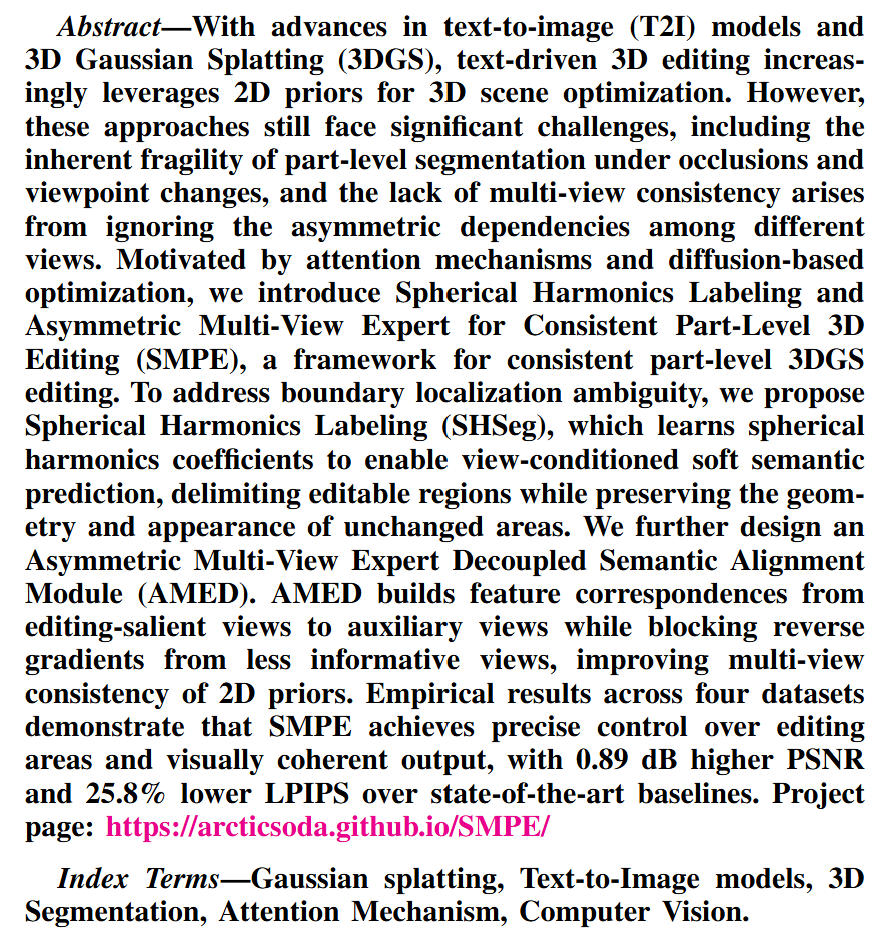
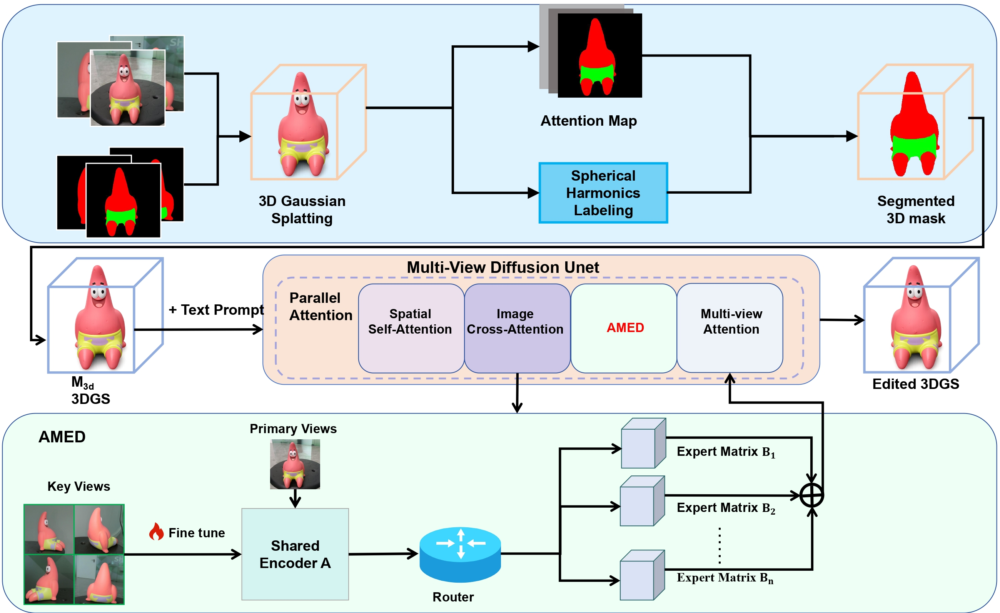
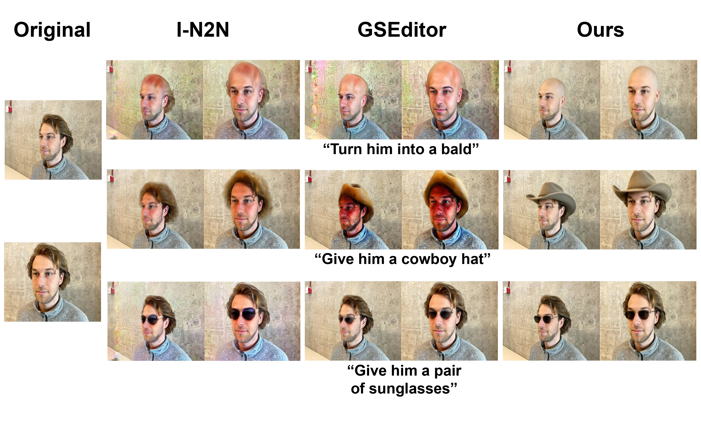
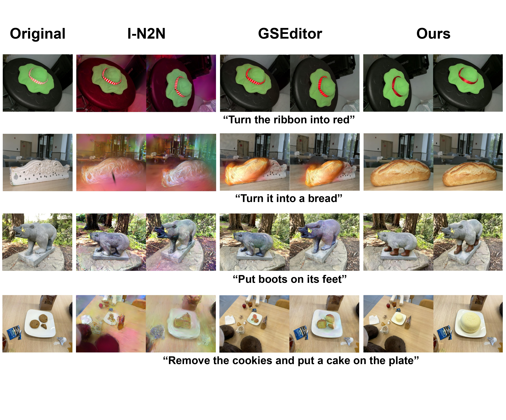

Figure: Overall pipeline of SMPE. Given a 3DGS scene and text prompt, Spherical Harmonics Labeling (SHSeg) performs local 3D segmentation to generate a 3D mask. The AMED module fine-tunes the multi-view attention layers of the diffusion U-Net for asymmetric cross-view feature alignment. Finally, the 3DGS scene is optimized within the masked region via multi-view diffusion sampling for consistent part-level editing.

Figure: Comparison on face editing. Given prompts such as "Give him a cowboy hat", I-N2N fails to produce sensible results, GSEditor propagates edits to irrelevant areas, while SMPE achieves precise, focused editing confined to the target region.

Figure: Comparison on object editing. Under prompts including "Turn the ribbon into red", "Turn it into a bread", "Put boots on its feet", and "Remove the cookies and put a cake on the plate", SMPE consistently outperforms I-N2N and GSEditor by accurately constraining edits to target objects while preserving background and multi-view consistency.